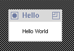

The Trestle subprocedure Install
used in the program
Hello.m3
manages all the details
in creating a window on the screen, in this case,
the TextVBT.
Additional arguments to Install allow one to
change the default window title, icon title, etc.
The Trestle subprocedure AwaitDelete
is the main event loop of the program.
The Modula-3 program
Hello.m3
does not terminate nor does it accept any input from the user.
The text ``Hello World'' is displayed until the program is
terminated by some external mechanism,
for instance, if the process is killed.
The appearance of the display device while the program is running
is depicted in Hello:

This image shows the text VBT displayed by the program.
The title bar on top of the window has been added by the window manager.
The bar is not part of the window that Trestle created.
Actually the window that comes up on the display is just the size of the text.
This window can be resized.
The image shows the window after it has already
been made slightly larger using the window manager.
The next section illustrates some of the many ways to control
the display of the text in a TextVBT window using Trestle.